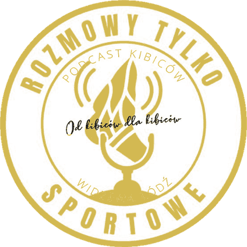
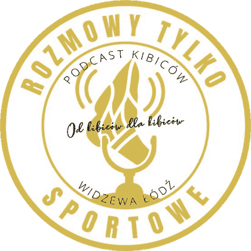
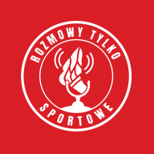

RTS Skaut to widzewski skaut dla kibiców: liczby, porównania i mapy ligi od podcastu Rozmowy Tylko Sportowe. Perk dla wspierających kanał cyklicznie. Czerwień klubu, złoto podcastu, mikrofon jako znak.
Logo jest znakiem podcastu i stoi zawsze w kole. Tło: czerwień klubu lub grafit. Złoto to akcent, nie wypełnienie.


Białe na czerwieniGłówne. Karty, ikona, nagłówek.
Złote na jasnymEkran ładowania, jasny motyw.
Nazwa: RTS Skaut (RTS to skrót podcastu Rozmowy Tylko Sportowe). Nagłówek karty: RTS Skaut · [temat]. Hasztag: #RTSkaut razem z #Widzew. Nigdy „RTS Stats”, „RTSstat”, „Skaut RTS”.
Narzędzie, w którym kibic sam robi to, co my pokazujemy w podcaście: porównuje zawodników i kluby, patrzy na mapę ligi, ogląda profil piłkarza. Jak skauting klubu, tylko dla trybun.
Widzewski skaut
dla kibiców
Nie obiecujemy „oficjalnych” danych ani współpracy z klubem.
RTS Skaut nie jest do kupienia osobno. To podziękowanie dla osób, które cyklicznie wspierają kanał w planie „Tylko dla orłów” (YouTube). Rozmowy Tylko Sportowe są marką nadrzędną: to one dają wartość, Skaut ją potwierdza.
Stopka karty (stały zapis): #RTSkaut · stan po N. kolejce Ekstraklasy 2026/27 · dane: zewnętrzny dostawca danych sportowych.
Nie wymieniamy nazwy dostawcy na kartach i planszach. Nie piszemy, że mamy licencję. Jeśli umowa z dostawcą wymaga podania źródła, wracamy do jego nazwy.
Zastrzeżenie w aplikacji i na Discordzie: RTS Skaut to nieoficjalny projekt kibiców podcastu Rozmowy Tylko Sportowe. Nie jest związany z klubem RTS Widzew Łódź. Herbu klubu nie używamy.
Karty wspierający może pobierać i wrzucać do własnych wpisów z #RTSkaut. Nie do użytku komercyjnego, nie do odsprzedaży danych.
Zawodnik, porównanie zawodników, porównanie klubów, mapa ligi, porównanie drużyn. Dostęp na wybrany czas (domyślnie 31 dni), przedłużany po sprawdzeniu członkostwa.
Wszystkie karty, w tym liczba przed rywalem, mecz, dom i wyjazd, własna liczba. Bez terminu.
Ekipa + ustawienia, prośby o dostęp, dane, tło kart.
Nazwa serwera: RTS Orły (zamknięty, tylko dla wspierających). Kolory: czerwień i złoto jak w marce, ikona: białe logo na czerwieni.
Role: Orzeł (wspierający „Tylko dla orłów”, złota), Ekipa (czerwona), Admin. Role nadaje integracja z członkostwem YouTube lub ręcznie admin.
Nagłówki, liczby na kartach, napisy wersalikami z rozstrzeleniem .05em.
Barlow Regular i SemiBold: teksty, opisy, formularze (min. 16 px na telefonie).